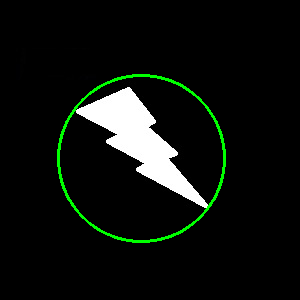

轮廓分析(下)
矩形边界
直矩形边界
这是一个直角矩形，不考虑对象的旋转角度。因此，矩形边界的面积将并不会是最小。
Rect boundingRect(InputArray array)
参数
输入vector<Point>或Mat，输出Rect类型
旋转矩形
考虑了旋转，以最小面积绘制边界矩形。
RotatedRect minAreaRect(InputArray points)
参数
输入vector<Point>或Mat，输出RotatedRect类型
minAreaRect()，它返回一个RotatedRect类型，其中包含以下细节：中心Point2f(x,y)，Size2f(宽,高)，float angle旋转角度。但是要绘制此矩形，我们需要矩形的4个角，可通过RotatedRect::points()函数获得。
...
RotatedRect rRect = minAreaRect(contours[i]);
Point2f vertices[4];
rRect.points(vertices);
for (int i = 0; i < 4; ++i)
line(test_image, vertices[i], vertices[(i+1)%4], Scalar(0,255,0), 2);
...

青色：boundingRect; 红色：minAreaRect
最小围圈
计算一个轮廓的外接圆。它是一个以最小面积完全覆盖对象的正圆圈。
void minEnclosingCircle(InputArray points, Point2f & center, float & radius)
参数
输入points，类型vector<Point>或Mat. 输出center，圆圈的中心点，类型Point2f；和，radius，圆圈的半径，类型float.
例子
...
// Find the minimum area enclosing circle
Point2f center;
float radius = 0;
minEnclosingCircle(points, center, radius);
// Draw the circle
circle(img, center, cvRound(radius), Scalar(0, 255, 255), 1, LINE_AA);
...

拟合椭圆
使椭圆拟合对象。返回一个描述椭圆的RotatedRect。
RotatedRect fitEllipse(InputArray points)
参数
输入vector<Point>或Mat，返回RotatedRect.
例子
...
RotatedRect box = fitEllipse(contours[i]);
ellipse(img, box, Scalar(0,255,0), 2, LINE_AA);
...

拟合直线
同样，我们可以将一条直线拟合到轮廓上（一组点）。下图包含一组白点。我们可以近似一条直线。
void fitLine(InputArray points, OutputArray line, int distType, double param, double reps, double aeps)
fitLine函数通过最小化∑
iρ(r
i)将线拟合到2D或3D点集，其中r
i是直线距离第i个点之间的距离，ρ(r)是距离函数，其中为：
DistanceTypes
DIST_USER —— 用户自定义距离函数。
DIST_L1 —— ρ(r) = |x1-x2| + |y1-y2|
DIST_L2 —— 简单欧氏距离
DIST_C —— ρ(r) = max(|x1-x2|,|y1-y2|)
DIST_L12 —— L1-L2公制: ρ(r) = 2(sqrt(1+x*x/2) - 1))
DIST_FAIR —— ρ(r) = c^2(|x|/c-log(1+|x|/c)), c = 1.3998
DIST_WELSCH —— ρ(r)e = c^2/2(1-exp(-(x/c)^2)), c = 2.9846
DIST_HUBER —— ρ(r) = |x|<c ? x^2/2 : c(|x|-c/2), c=1.345
[维奇百科]
参数
points —— 2D或3D点的输入向量，存储在vector<Point>或Mat中。
line —— 输出直线线参数。如果是2D拟合，则它应该是4个元素的向量(Vec4f)：(vx,vy,x0,y0)，
其中(vx,vy)是形容那直线的已归一化向量，而(x0,y0)是直线上的其中一点。
如果是3D拟合，它则会是6个元素的向量(Vec6f)：(vx,vy,vz,x0,y0,z0)，
其中(vx,vy,vz)是形容那直线的已归一化3D向量，而(x0,y0,z0)是直线上的一个点。
distType —— 选择距离函数，请参见DistanceTypes
param —— 某些距离类型的数值参数（C）。如果为0，则选择一个最佳值。
reps —— 半径的足够精度（坐标原点和直线之间的距离）。
aeps —— 足够的角度精度。对于reps和aeps，0.01将是一个很好的默认值。
例子
...
Vec4f line;
fitLine(contours[i], line, DIST_L2, 0, 0.01, 0.01);
int lefty = (-line[2]*line[1]/line[0]) + line[3];
int righty = ((img.size().width-line[2])*line[1]/line[0])+line[3];
line(img, Point(img.size().width-1,righty), Point(0,lefty), Scalar(0,255,0), 2);
...